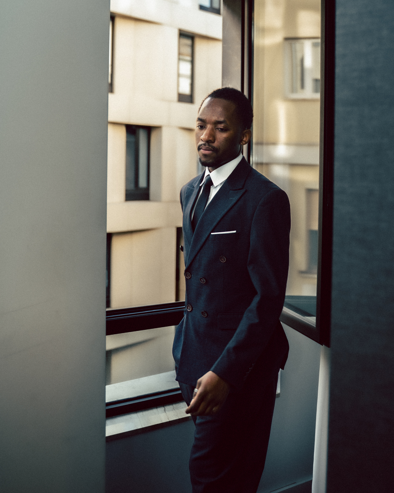

Information
Jadai Nyimbwa is a self-taught photographer and filmmaker based in Belgrade, working across fashion, portraiture and documentary photography. With a practice rooted in curiosity and an appreciation for visual storytelling, he approaches each project with a distinct perspective, drawing inspiration from people, culture and everyday life.
Through photography and film, his work seeks to capture stories that might otherwise go unnoticed, exploring human connection, identity and the beauty of the in-between moments.